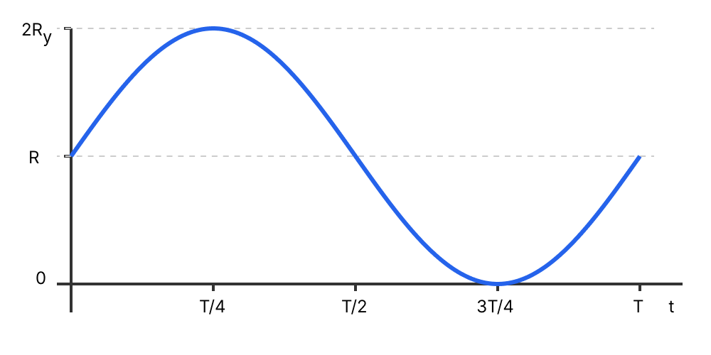

עקרון: מהירות היא גודל וקטורי. שינוי בכיוון המהירות מחייב קיומה של תאוצה (תאוצה רדיאלית בתנועה מעגלית).
פתרון צעד-אחר-צעד:
למרות שגודל המהירות קבוע, הגוף נע במסלול מעגלי. המשמעות היא שווקטור המהירות משנה את כיוונו ברציפות. על פי החוק השני של ניוטון, שינוי בווקטור המהירות (גם אם זה רק שינוי בכיוון) מחייב קיומה של תאוצה. תאוצה זו נקראת תאוצה רדיאלית, והיא מכוונת תמיד למרכז המעגל. לכן, התאוצה אינה אפס.
לא, התאוצה שונה מאפס מכיוון שכיוון המהירות משתנה לאורך התנועה המעגלית.
טיפ מורה:
מלכודת נפוצה! תלמידים שומעים "מהירות קבועה" וישר חושבים שהתאוצה אפס. זכרו: מהירות היא וקטור. אם הכיוון משתנה, יש תאוצה. בתנועה מעגלית קצובה התאוצה המשיקית היא אפס, אבל התאוצה הרדיאלית שונה מאפס.
סעיף ב'
מה נתון: גלגל הענק מסתובב בכיוון השעון. נתונות הנקודות \( A \) (תחתית), \( B \) (שמאל, בדרך למעלה), ו-\( C \) (פסגה). מסת המערכת כיסא+ילד \( M = 120 \text{ kg} \), רדיוס הגלגל \( R = 60 \text{ m} \) (מתוך קוטר של 120 מטר), וזמן מחזור \( T = 20 \text{ min} = 1200 \text{ s} \).
מה מחפשים: (1) לקבוע את הכוחות הפועלים. (2) להשלים טבלה עם כיווני הכוחות. (3) להשלים טבלה עבור הכוח השקול.
עקרון: בתנועה מעגלית קצובה, שקול הכוחות הפועל על הגוף (הכוח הרדיאלי) מכוון תמיד למרכז המעגל.
פתרון צעד-אחר-צעד:
חלק (1): הכוחות הפועלים על המערכת "כיסא + ילד" הם כוח הכבידה (משקל) הפועל כלפי מטה, והכוח שמפעיל הגלגל (מתלה הכיסא) על המערכת, נקרא לו \( \vec{N} \) או \( \vec{F}_{\text{wheel}} \).
ניתוח הכוחות והכוח השקול: כדי שהשקול יצביע למרכז, הכוח של הגלגל צריך לבטל את הרכיב המשיקי של המשקל ולספק את הרכיב הרדיאלי הדרוש שגודלו (לאחר הצבת הנוסחאות) הוא \( \Sigma F_R = M a_R = M \frac{4\pi^2 R}{T^2} \).
בנקודה A (למטה): המרכז נמצא למעלה. לכן שקול הכוחות חייב להיות כלפי מעלה. מכיוון שכוח הכבידה הוא למטה, כוח הגלגל חייב להיות כלפי מעלה (וגדול יותר מהמשקל).
בנקודה B (שמאל): המרכז נמצא ימינה. לכן שקול הכוחות חייב להיות ימינה. כוח הגלגל חייב להיות בעל רכיב אנכי כלפי מעלה (כדי לאפס את המשקל שיורד מטה) ורכיב אופקי ימינה (כדי לספק את התאוצה למרכז). לכן כוח הגלגל הוא "ימינה ומעלה".
בנקודה C (למעלה): המרכז נמצא למטה. לכן שקול הכוחות חייב להיות כלפי מטה. כיוון שהמהירות איטית מאוד (\( a_R \approx 0.0016 \text{ m/s}^2 \)), המשקל \( W \) גדול בהרבה מהכוח הדרוש. ולכן, על פי המשוואה \( W - N = M a_R \), הכוח שהגלגל מפעיל עדין מכוון כלפי מעלה (רק שהוא קטן מהמשקל).
שם הכוח
כיוון הכוח
בנקודה A
בנקודה B
בנקודה C
כוח הכבידה (\( W \))
כלפי מטה
כלפי מטה
כלפי מטה
כוח מהגלגל (\( \vec{N} \))
כלפי מעלה
ימינה ומעלה
כלפי מעלה
כוח שקול (\( \Sigma\vec{F} \))
כלפי מעלה
ימינה (למרכז)
כלפי מטה
תרשימי כוחות (FBD) בשלוש הנקודות
הטבלה והשרטוטים משלימים את כיווני הכוחות והכוח השקול כנדרש.
טיפ מורה:
כדי להבין את השורה של "הכוח השקול", תמיד שאלו את עצמכם: איפה מרכז המעגל ביחס לנקודה שבה נמצא הגוף? הכוח השקול תמיד יצביע לאותו כיוון. לאחר מכן, גזרו מכך את הכיוון של הכוח המושך/דוחף את הגוף אל מול כוח הכבידה שתמיד מושך למטה.
סעיף ג'
הערה לפני שמתחילים: נושא התנועה ההרמונית הפשוטה נכנס ויוצא ממיקוד הבגרות בשנים האחרונות. מומלץ לשאול את המורה שלכם אם נושא זה נמצא במיקוד של שנת הלימודים הנוכחית!
מה נתון: ברגע \( t=0 \) המערכת נמצאת בנקודה B והיא נעה כלפי מעלה. הגלגל מסתובב בכיוון השעון. מחזור אחד מסומן ב-\( T \).
מה מחפשים: לשרטט גרף מקורב של המיקום האנכי (\( y \)) כפונקציה של הזמן (\( t \)), במשך סיבוב שלם אחד. נניח שהגובה בנקודה A הוא אפס למען פשטות הגרף (כלומר, הגלגל משיק לקרקע).
נוסחאות ועקרונות בשימוש: \( x = A \cos(\omega t + \phi) \)
עקרון: ההיטל של תנועה מעגלית קצובה על ציר מתנהג כתנועה הרמונית פשוטה, ולכן ניתן לתיאור מדויק על ידי פונקציית קוסינוס (או סינוס).
פתרון צעד-אחר-צעד:
שלב 1: פיתוח פונקציית המיקום עם קוסינוס
הגובה משתנה כתנועה הרמונית פשוטה סביב גובה המרכז \( R \), עם משרעת של \( R \). נשתמש במשוואת הקוסינוס מהדף ונתאים אותה לציר \( y \). לכן צורת הפונקציה היא \( y(t) = R + R\cos(\omega t + \phi) \).
נמצא את זווית המופע ההתחלתית \( \phi \): ברגע \( t=0 \), הגוף נמצא בנקודה B, כלומר בגובה \( y = R \). נציב זאת במשוואה:
\[ R = R + R\cos(\phi) \implies \cos(\phi) = 0 \implies \phi = \pm\frac{\pi}{2} \]
הגוף נע מנקודה B כלפי מעלה, ולכן המהירות האנכית ב-\( t=0 \) היא חיובית. נגזרת המיקום נותנת מהירות הפרופורציונלית ל-\( -\sin(\phi) \). כדי שהמהירות תהיה חיובית, נדרש ש-\( \sin(\phi) < 0 \), ולכן נבחר \( \phi = -\frac{\pi}{2} \).
\[ y(t) = R + R\cos\left(\omega t - \frac{\pi}{2}\right) \]
שלב 2: שרטוט הגרף המדויק
על פי הפונקציה שקיבלנו, נזהה את הנקודות המרכזיות בגרף: ב-\( t=0 \) הגובה הוא \( R \), ברבע מחזור (\( t=T/4 \)) הפונקציה מגיעה לשיא \( 2R \), ב-\( t=T/2 \) היא חוזרת ל-\( R \), ב-\( t=3T/4 \) היא מגיעה לתחתית ב-\( 0 \), ובסיום המחזור ב-\( t=T \) חוזרת ל-\( R \).

הגרף המדויק מתאר את פונקציית הקוסינוס עם מופע התחלתי של מינוס 90 מעלות (פונקציה הזהה גרפית לפונקציית סינוס).
טיפ מורה:
שימו לב לקשר המקסים בין תנועה מעגלית לתנועה הרמונית! הפעלת כוח רדיאלי בלבד גורמת לגוף לעלות ולרדת בדיוק לפי פונקציה טריגונומטרית מושלמת, כאילו הוא מחובר לקפיץ.
סעיף ד'
מה נתון: פרק הזמן הוא \( 0 < t < 0.375T \). רדיוס הגלגל \( R = 60 \text{ m} \), מסת המערכת \( M = 120 \text{ kg} \), תאוצת הכובד \( g = 10 \text{ m/s}^2 \). ברגע \( t=0 \) הגוף היה בנקודה B (אופקית למרכז). נקבע את הקרקע כנקודת הייחוס לגובה (\( y = 0 \)).
מה מחפשים: את שינוי האנרגיה המכנית הכוללת של המערכת בפרק זמן זה.
המערכת מתחילה בנקודה B. כיוון שרדיוס הגלגל הוא \( 60 \text{ m} \) והנקודה B נמצאת בדיוק בגובה המרכז, הגובה ההתחלתי ביחס לקרקע הוא \( y_i = 60 \text{ m} \).
הילד מסתובב עם כיוון השעון \( 135^\circ \). הוא עולה \( 90^\circ \) עד לנקודה C (פסגת הגלגל), ולאחר מכן יורד עוד \( 45^\circ \) לעבר הצד הימני. הגובה הסופי מורכב מגובה המרכז (\( 60 \text{ m} \)) ועוד היתרה האנכית שמעל המרכז (\( R\sin(45^\circ) \)). כלומר: \( y_f = 60 + 60\sin(45^\circ) \).
שלב 3: חישוב השינוי באנרגיה הפוטנציאלית
נמצא את ההפרש בגבהים \( \Delta y \) (נעגל ל-3 ספרות מהותיות בתוצאה הסופית):
שינוי האנרגיה המכנית הוא: \( \Delta E \approx 5.09 \cdot 10^4 \text{ J} \) (או בערך מוחלט \( 50.9 \text{ kJ} \)).
טיפ מורה:
טעות נפוצה היא להתחיל לחשב את המהירות \( v \) כדי למצוא את האנרגיה הקינטית. שימו לב שאמנם יש לגוף אנרגיה קינטית, אבל שואלים אותנו על השינוי. אם המהירות קבועה, השינוי באנרגיה הקינטית הוא 0!
למה קבענו את הקרקע כ- \( y=0 \)? בפיזיקה, המיקום של \( y=0 \) הוא שרירותי. יכולנו גם להגדיר את מרכז הגלגל כ-\( y=0 \) (ואז \( y_i = 0 \) ו-\( y_f = 30\sqrt{2} \)). מה שחשוב בחוק שימור אנרגיה הוא תמיד ההפרש בגבהים (\( \Delta y \)), וזה נשאר בדיוק אותו הדבר ללא תלות בנקודת הייחוס שבחרתם!
סעיף ה'
מה נתון: פרק הזמן המוגדר הוא כבסעיף ד' (\( 0 < t < 0.375T \)). המערכת נעה במהירות קבועה בגודלה.
מה מחפשים: לקבוע האם העבודה הכוללת הנעשית על המערכת בפרק זמן זה היא חיובית, שלילית או שווה לאפס, ולנמק.
עקרון: משפט עבודה-אנרגיה קובע כי עבודת שקול הכוחות הפועלים על גוף שווה לשינוי באנרגיה הקינטית שלו.
פתרון צעד-אחר-צעד:
על פי משפט עבודה-אנרגיה, העבודה הכוללת מוגדרת כשינוי באנרגיה הקינטית. ראינו בסעיף הקודם שגודל המהירות של גלגל הענק נשאר קבוע לאורך כל התנועה. מכיוון שהאנרגיה הקינטית תלויה רק במסה ובריבוע מהירות (גדלים סקלריים), היא אינה משתנה. כלומר, השינוי באנרגיה הקינטית הוא אפס (\( \Delta E_k = 0 \)). מתוך משפט עבודה-אנרגיה, נובע שהעבודה הכוללת שבוצעה על המערכת היא אפס.
העבודה הכוללת שווה לאפס, מכיוון שאין שינוי באנרגיה הקינטית של המערכת.
טיפ מורה:
חשוב להבדיל בין "עבודה של כוח מסוים" ל"עבודה כוללת". העבודה של כוח הכבידה כאן היא שלילית (כי הגוף עלה ולכן כוח הכבידה פעל נגד כיוון התנועה). העבודה של מנוע הגלגל (דרך מוטות הברזל) היא חיובית. סכום העבודות שלהם (העבודה הכוללת) שווה בדיוק לאפס!
נוסח השאלה המקורית
[תמונת השאלה המקורית]לא נמצאה תמונה בשם question-image.png.